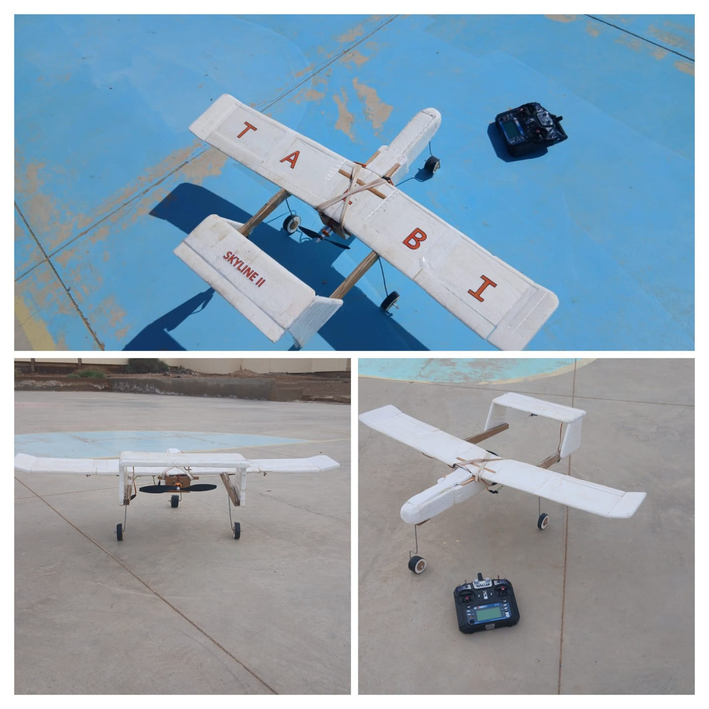
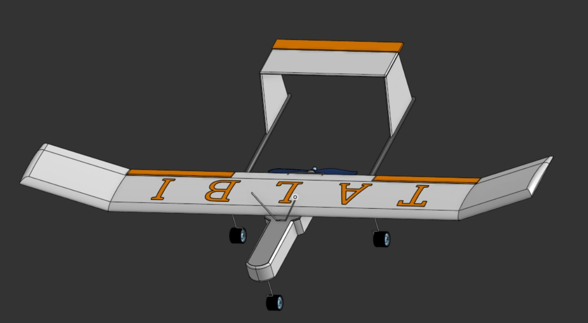
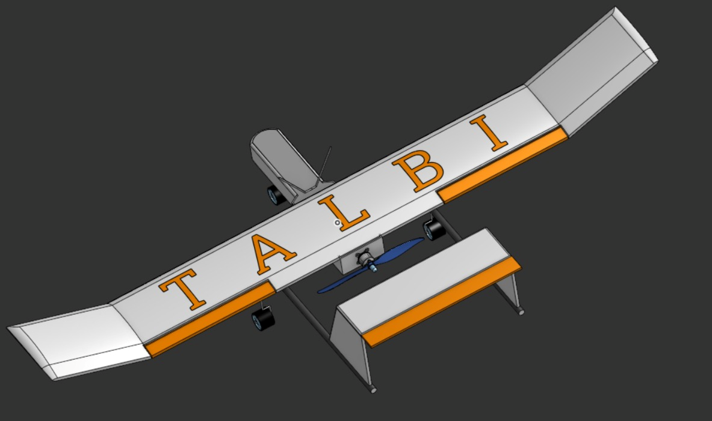
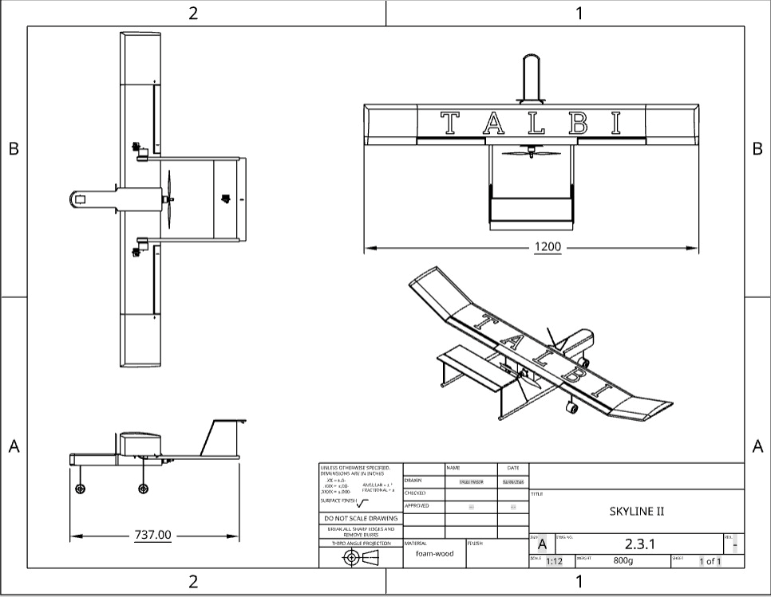
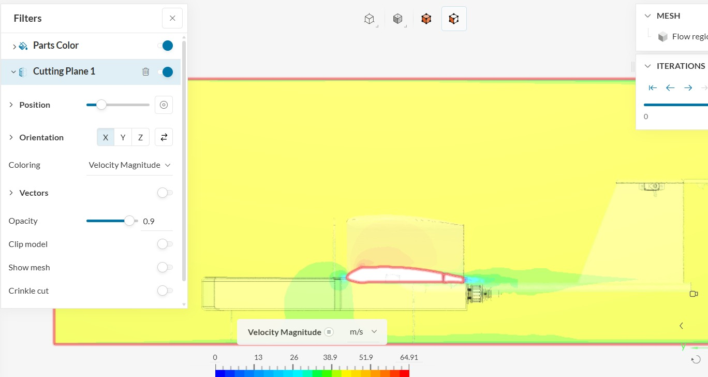
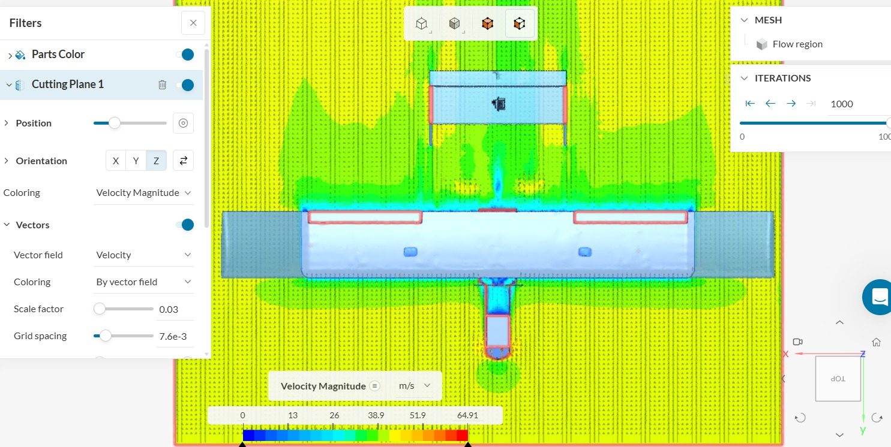
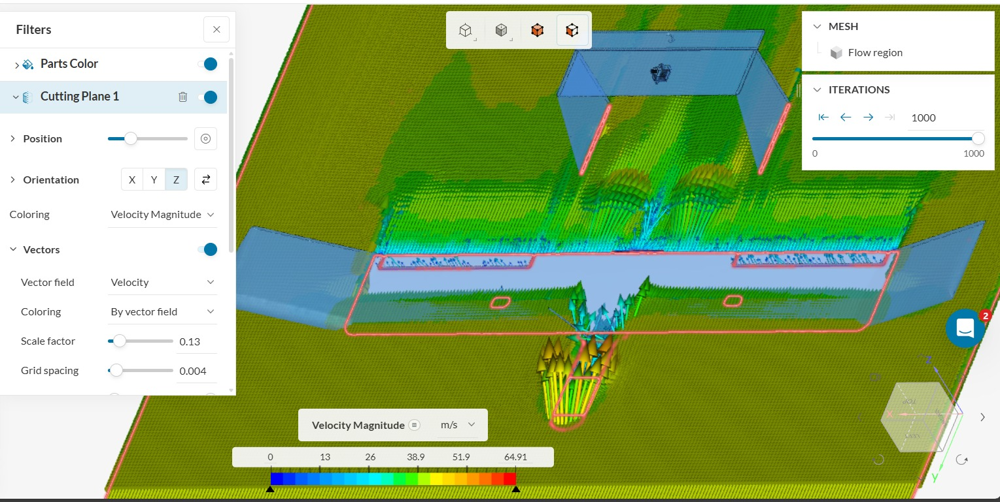
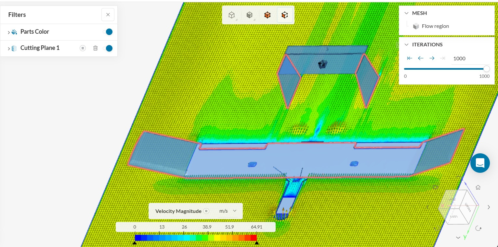

SKYLINE SERIES DOCUMENTATION
Our way to the sky... is our way to the future...

Vision de la Série SKYLINE
La série SKYLINE représente mon parcours d'ingénierie dans le domaine de l'aéronautique et des systèmes embarqués. Ce projet évolutif vise à concevoir des aéronefs à voilure fixe de type "Pusher" (propulsion arrière), en partant d'une structure purement mécanique pour aboutir à une plateforme intelligente et stabilisée de manière autonome.
Chaque itération de la série SKYLINE résout des défis spécifiques : l'aérodynamisme et la résistance des matériaux pour la V1, et l'avionique complexe avec contrôle PID sur STM32 pour la V2. Cette démarche illustre une maîtrise complète du cycle de développement en V, de la théorie aérodynamique à la fabrication réelle.
SKYLINE I : Conception & Validation
Fiche Technique
Paramètre
Spécification
Nom de modele
SKYLINE1
type de modele
twin boom pusher (H-TAIL CONFIG)
Envergure (Wingspan)
1200 mm
Poids au décollage (MTOW)
850 g
Propulsion
Brushless Outrunner (Pusher)
Batterie
LiPo 3S 2200mAh
Matériaux
Mousse XPS, renfort en bois
Conception & Design CAD
La conception de la SKYLINE I a été réalisée en utilisant des outils de CAO (Conception Assistée par Ordinateur) pour garantir une précision maximale dans les dimensions et les ajustements. Le design a été optimisé pour réduire la traînée tout en maintenant une structure robuste.
- Logiciel utilisé : SolidWorks et Onshape
- Étapes principales : Modélisation 3D, simulation aérodynamique, et génération des plans de découpe.



Étude Aérodynamique
1. Étude de l'Aile et du Profil Aérodynamique
La SKYLINE I a servi de banc d'essai pour valider la configuration "Pusher". L'étude s'est concentrée sur la stabilité statique longitudinale et l'influence de la position du moteur sur le centre de poussée.
- Profil d'aile : Utilisation d'un profil Clark Y pour sa portance élevée à basse vitesse.
- Calcul de Stabilité : Détermination précise du centre de gravité ($CG$) pour compenser l'absence de stabilisation électronique initiale.


2. Étude du Fuselage et Minimisation de la Traînée
Le fuselage a été conçu pour réduire la traînée tout en maintenant une structure robuste et légère. L'optimisation a été réalisée en tenant compte des contraintes de fabrication et des performances aérodynamiques.
- Forme du fuselage : Design profilé pour minimiser la traînée parasite.
- Position du moteur : Placement stratégique pour équilibrer les forces aérodynamiques et réduire les perturbations.


Fabrication & Structure
La fabrication repose sur une structure composite "low-cost" mais rigide, adaptée aux tests de terrain.
- Cellule : Mousse polystyrène extrudée (XPS) pour la légèreté.
- Renforts : Intégration de longerons en bois de pin traversant l'aile pour prévenir la flexion sous charge.

SKYLINE II : Avionique & Stabilité Augmentée
Fiche Technique
Paramètre
Spécification
Nom de modele
SKYLINE2
type de modele
twin boom pusher (H-TAIL CONFIG)
Envergure (Wingspan)
1350 mm
Poids au décollage (MTOW)
920 g
Propulsion
Brushless Outrunner (Pusher)
Contrôleur de vol (FC)
STM32 Custom Firmware,MPU6050
Batterie
Li-ion 3S 4400mAh
Matériaux
Mousse XPS,carton mousse & Longeron Bois de Pin
1. Étude Dynamique & Contrôle
L'innovation majeure de la V2 est la suppression de la dérive verticale mobile, confiant la stabilité de lacet à un système d'asservissement actif.
- Stabilité de lacet : Étude de l'effet gyroscopique et de la compensation électronique via les ailerons.
- Modélisation PID : Implémentation d'une boucle de régulation pour stabiliser l'assiette en temps réel.


2. Fabrication & Électronique
Le fuselage a été redessiné pour accueillir une unité de traitement performante et optimiser le flux d'air moteur.
- Avionique : Microcontrôleur STM32 (ARM Cortex-M) pour une gestion ultra-rapide des signaux PWM.
- Capteurs : Centrale inertielle MPU6050 filtrée par un algorithme complémentaire.
3. Firmware (C++)
SKYLINE2_STM32_CONTROL.cpp
// Calcul PID pour la stabilisation active
void updateFlightStabilization() {
float currentPitch = IMU.readPitch();
float error = targetPitch - currentPitch;
float output = Kp * error + Ki * integral + Kd * derivative;
setServoPosition(output);
}
But du projet
Démontrer la fusion entre la mécanique aéronautique et l'informatique embarquée pour créer un drone agile, capable de voler avec une géométrie simplifiée grâce à l'intelligence logicielle.
Vision de la Série SKYLINE
La série SKYLINE représente mon parcours d'ingénierie dans le domaine de l'aéronautique et des systèmes embarqués. Ce projet évolutif vise à concevoir des aéronefs à voilure fixe de type "Pusher" (propulsion arrière), en partant d'une structure purement mécanique pour aboutir à une plateforme intelligente et stabilisée de manière autonome.
Chaque itération de la série SKYLINE résout des défis spécifiques : l'aérodynamisme et la résistance des matériaux pour la V1, et l'avionique complexe avec contrôle PID sur STM32 pour la V2. Cette démarche illustre une maîtrise complète du cycle de développement en V, de la théorie aérodynamique à la fabrication réelle.
SKYLINE I : Conception & Validation
Fiche Technique
| Paramètre | Spécification |
|---|---|
| Nom de modele | SKYLINE1 |
| type de modele | twin boom pusher (H-TAIL CONFIG) |
| Envergure (Wingspan) | 1200 mm |
| Poids au décollage (MTOW) | 850 g |
| Propulsion | Brushless Outrunner (Pusher) |
| Batterie | LiPo 3S 2200mAh |
| Matériaux | Mousse XPS, renfort en bois |
Conception & Design CAD
La conception de la SKYLINE I a été réalisée en utilisant des outils de CAO (Conception Assistée par Ordinateur) pour garantir une précision maximale dans les dimensions et les ajustements. Le design a été optimisé pour réduire la traînée tout en maintenant une structure robuste.
- Logiciel utilisé : SolidWorks et Onshape
- Étapes principales : Modélisation 3D, simulation aérodynamique, et génération des plans de découpe.
Étude Aérodynamique
1. Étude de l'Aile et du Profil Aérodynamique
La SKYLINE I a servi de banc d'essai pour valider la configuration "Pusher". L'étude s'est concentrée sur la stabilité statique longitudinale et l'influence de la position du moteur sur le centre de poussée.
- Profil d'aile : Utilisation d'un profil Clark Y pour sa portance élevée à basse vitesse.
- Calcul de Stabilité : Détermination précise du centre de gravité ($CG$) pour compenser l'absence de stabilisation électronique initiale.
2. Étude du Fuselage et Minimisation de la Traînée
Le fuselage a été conçu pour réduire la traînée tout en maintenant une structure robuste et légère. L'optimisation a été réalisée en tenant compte des contraintes de fabrication et des performances aérodynamiques.
- Forme du fuselage : Design profilé pour minimiser la traînée parasite.
- Position du moteur : Placement stratégique pour équilibrer les forces aérodynamiques et réduire les perturbations.
Fabrication & Structure
La fabrication repose sur une structure composite "low-cost" mais rigide, adaptée aux tests de terrain.
- Cellule : Mousse polystyrène extrudée (XPS) pour la légèreté.
- Renforts : Intégration de longerons en bois de pin traversant l'aile pour prévenir la flexion sous charge.
SKYLINE II : Avionique & Stabilité Augmentée
Fiche Technique
| Paramètre | Spécification |
|---|---|
| Nom de modele | SKYLINE2 |
| type de modele | twin boom pusher (H-TAIL CONFIG) |
| Envergure (Wingspan) | 1350 mm |
| Poids au décollage (MTOW) | 920 g |
| Propulsion | Brushless Outrunner (Pusher) |
| Contrôleur de vol (FC) | STM32 Custom Firmware,MPU6050 |
| Batterie | Li-ion 3S 4400mAh |
| Matériaux | Mousse XPS,carton mousse & Longeron Bois de Pin |
1. Étude Dynamique & Contrôle
L'innovation majeure de la V2 est la suppression de la dérive verticale mobile, confiant la stabilité de lacet à un système d'asservissement actif.
- Stabilité de lacet : Étude de l'effet gyroscopique et de la compensation électronique via les ailerons.
- Modélisation PID : Implémentation d'une boucle de régulation pour stabiliser l'assiette en temps réel.
2. Fabrication & Électronique
Le fuselage a été redessiné pour accueillir une unité de traitement performante et optimiser le flux d'air moteur.
- Avionique : Microcontrôleur STM32 (ARM Cortex-M) pour une gestion ultra-rapide des signaux PWM.
- Capteurs : Centrale inertielle MPU6050 filtrée par un algorithme complémentaire.
3. Firmware (C++)
// Calcul PID pour la stabilisation active
void updateFlightStabilization() {
float currentPitch = IMU.readPitch();
float error = targetPitch - currentPitch;
float output = Kp * error + Ki * integral + Kd * derivative;
setServoPosition(output);
}But du projet
Démontrer la fusion entre la mécanique aéronautique et l'informatique embarquée pour créer un drone agile, capable de voler avec une géométrie simplifiée grâce à l'intelligence logicielle.